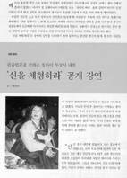
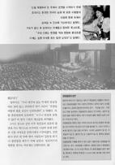

| Revue de presse |
|
|
"Expérimentez le divin" |
Reportage Extrait du "Magasine mensuel de vision de l'esprit"
(une publication consacrée à la vie spirituelle en Corée)
Edition du mois de juin 2000 (à l'origine en coréen )

Le 8 mai 2000 a eu lieu une conférence ouverte au public de Maître Suprême Ching Hai, le Maître spirituel de Au Lac, au Centre de Convention COEX à Samsung-dong. C'était la dernière conférence que Maître Ching Hai a prononcé durant Sa tournée "Océan d'Amour" à travers neuf pays de l'Océanie et de l'Asie. La conférence de Corée s'est tenue devant un public d'environ 9 000 personnes.
Dès son entrée dans le hall, Maître Ching Hai, habillée d'un manteau traditionnel coréen jaune et d'une jupe bleue fut accueillie par un tonnerre d'applaudissements. Elle était très attentionnée vis à vis de son auditoire coréen. Pendant que Maître traversait le hall, une multitude de personnes affluaient à ses côtés pour Lui toucher ou Lui serrer la main.
Avant de commencer la conférence, dont le thème était "Expérimentez le divin", Maître Ching Hai a proposé au public de faire une prière pour toutes les populations de la Corée du Sud et du Nord afin que les gens de la nation divisée puissent vivre dans l'amour et dans la paix. Après la prière Elle a dit d'une voix pleine d'amour et d'élégance que nous sommes tous un. Nous possédons tous la Nature Dieu ou la Nature de Bouddha à l'intérieur, ce qui est notre véritable Nature. Mais tout le monde ne le sait pas. Elle continua en faisant remarquer que l'humanité est déjà passée par de nombreuses illusions et que maintenant nous n'avons qu'une chose à faire : trouver notre Être Véritable.
Chaque religion dit que Dieu se trouve à l'intérieur de nous et si Dieu se trouve à l'intérieur de nous il est très simple de voir Dieu. Nous avons tous oublié le message enseigné par les grands Maîtres à travers le temps disant que Dieu se trouve à l'intérieur de nous, que nous sommes Dieu et que nous pouvons voir notre Être Véritable.
Maître Ching Hai a dit également qu'il est très facile et simple de connaître Dieu à l'intérieur de nous. Elle a dit qu'Elle nous guiderait pour trouver notre Nature Véritable et a exprimé sa confiance dans le salut spirituel disant que quiconque prenait l'initiation pouvait trouver sa véritable Nature.
Après avoir parlé environ une heure, Maître a répondu ensuite aux questions du public durant la session des questions-réponses. Une atmosphère pleine d'amour imprégnait le Hall durant toute la conférence. Après la conférence, des centaines de personnes sont restées pour recevoir l'initiation ou pour apprendre la Méthode Pratique.
La Méthode Guan Yin La Méditation Guan Yin, enseignée par Maître Suprême Ching Hai et pratiquée par des millions de personnes à travers le monde, est considérée comme étant la plus ancienne méthode de méditation. Elle consiste à " contempler " la Lumière et le Son spirituels qui existent à l'intérieur de nous. La Méthode Guan Yin est également considérée comme étant le chemin le plus facile et le plus rapide pour connaître son Soi. Elle est transmise sans paroles et nous permet de retrouver notre pouvoir tout puissant. Il est dit que ce pouvoir se manifeste sous la forme de la Lumière et du Son intérieurs.
Il n'y a aucune condition pour apprendre la Méthode Guan Yin si ce n'est que l'on doit garder un régime purement végétarien, méditer deux heures et demi par jour et respecter les Cinq Préceptes, à savoir "ne pas tuer, ne pas mentir, ne pas voler, ne pas avoir d'inconduite sexuelle, et ne pas prendre des intoxicants".
Ceux qui ne sont pas prêts pour apprendre la méthode Guan Yin peuvent apprendre la Méthode Pratique. Les pratiquants de la Méthode Pratique ne n'ont pas à être des végétariens à vie, mais doivent garder un régime strictement végétarien pendant au moins dix jours par mois et méditer durant trente minutes dans la journée, mais pas davantage.